背景
因为平时坐姿的问题，加上办公室久坐，导致脊椎出现一系列的问题。恰巧看到酷安上的一篇文章，里面有一本书 麦肯基疗法 7步告别颈椎腰椎烦恼，看了一遍做了个总结。这个酷友还分享了一系列的软件（仅限 Android，苹果用户可以去 App Store 根据名字搜索下载。），大家可以安装试用看看。我这里转载一下，里面资源还是挺多的。有需要可以直接点击下载
基础知识
脊椎

不良姿势
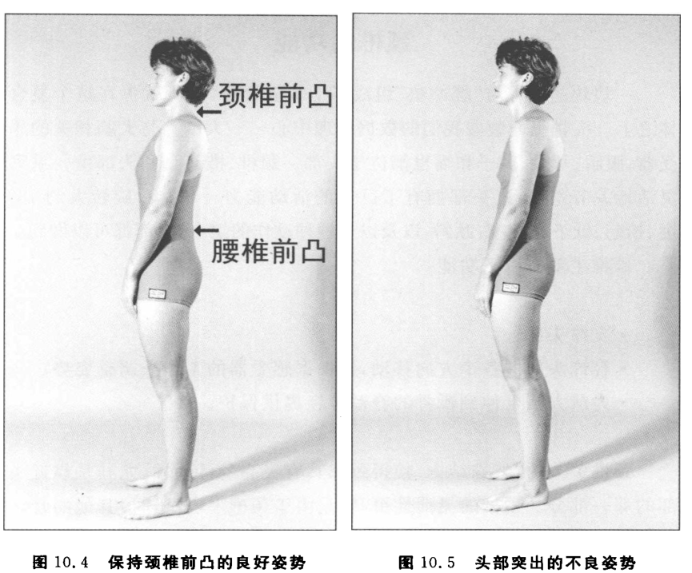
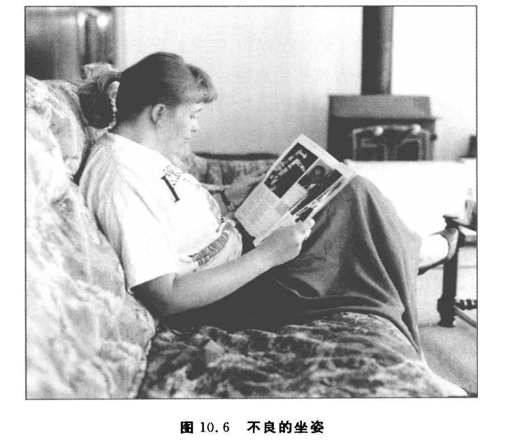
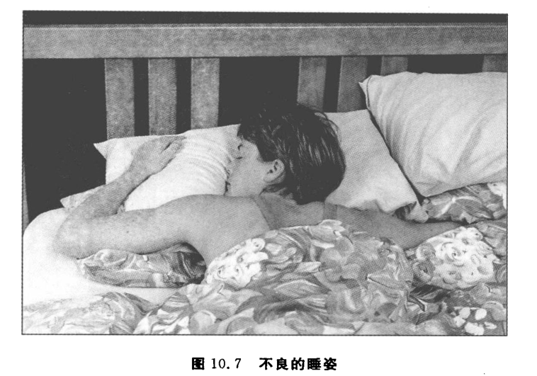
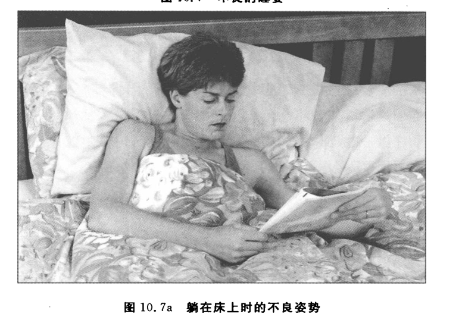
疼痛的位置
疼痛的第一次发作时，位置通常在颈部附近，靠近中心（10.9）或位于一侧（10.10）。通常情况下，疼痛会在几天内减弱。疼痛再次发作时，则可能就会延伸到肩部（10.11），甚至到达肩胛（10.12）。反复多次发作后，疼痛可能会一直延伸到上臂外侧和后侧，并一直向下到达肘部（10.13），甚至可能蔓延到手腕或手掌（10.14）。由于颈部的问题，有些人还会感觉到头痛。这种头痛通常都位于颈部上端、大脑后部单侧或两侧（10.15）。有时，疼痛也会越过头顶从后部一直蔓延到眼后（单侧或者两侧）
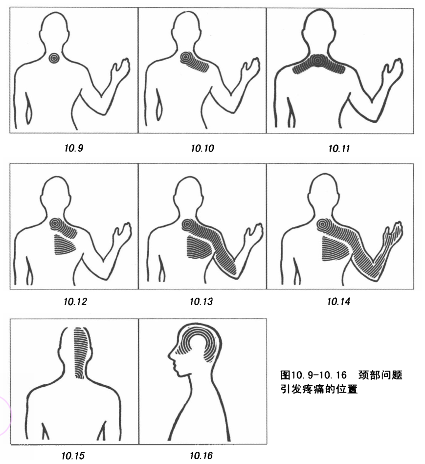
如何形成腰椎前凸
坐姿
让自己尽可能佝偻起来（4.8），保持几秒钟，然后直立起身体，尽可能突出脊椎前凸，正确坐姿的极端状态就是这样了（4.9）。保持这个姿势几秒钟，然后在回到放松的姿态（4.8）。
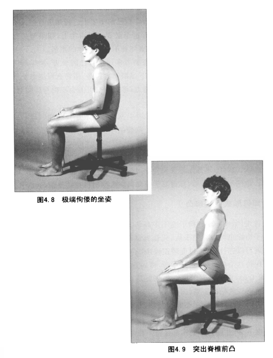
想要长时间保持 4.9 的坐姿是不可能的，因为脊椎会感受到很大的压力，长时间保持这个姿势甚至会导致疼痛。想要做的既正确又舒适，不需要挺得那么直。你可以先做成上门那种极端姿势，然后将脊椎前凸收到的压力减小约10%，并注意不要勾腰（4.10）
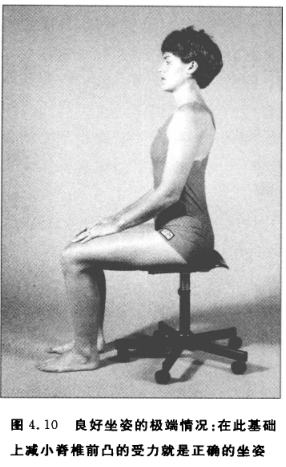
可以使用 腰部支撑卷 来辅助改善坐姿
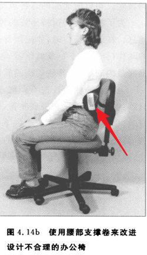
站姿
有些人站立太长实践 也会感到下背部疼痛，就好像久坐时一样。久坐时，支撑脊柱的肌肉感到疲劳并放松下来，使我们容易变得弯腰驼背。而在我们放松地战力的时候，腰椎前凸却会过分向前弯曲，达到另一个极端。
这种姿势与驼背的坐姿完全相反。想要长时间这样站立也是不可能的，因为这种腰椎前凸极度扩张的姿势也会使腰椎受到很大的压力。
长时间站立时，必须保持正确的站姿。挺直后背，并经常提醒自己，不要使腰椎前凸过分弯曲
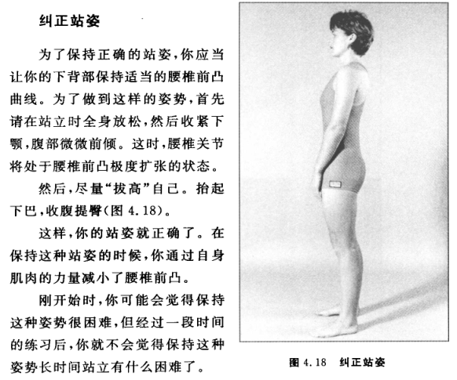
睡姿
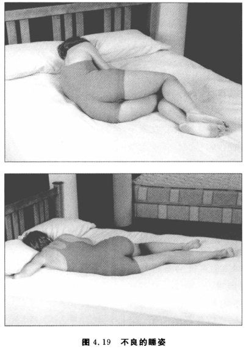
请使用 夜间专用型的腰部支撑卷 来改善睡眠姿势
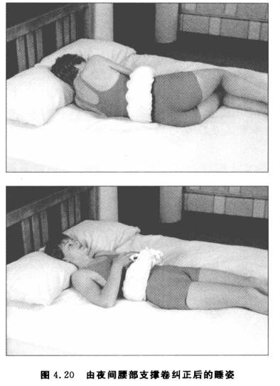
引起颈痛的原因
久坐
我们在走动时（尤其是快步走动德时候）都会自然而然地保持比较挺拔德姿势。在走路时，我们的头部会回缩到脊椎的正上面以便获得最大程度德支撑。而当我们坐在椅子里休息时，头部和颈部就会慢慢地突出，因为支撑头颈部德肌肉会慢慢变得疲劳。肌肉疲劳后，你就会想要放松，随后德坐姿就会变得不正确。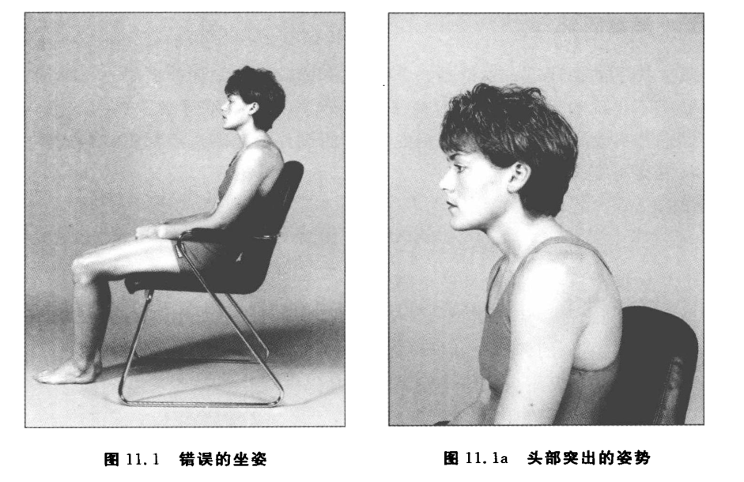
长时间保持这种头部突出德姿势会导致韧带过度拉伸。很容易引起椎间盘髓核变形。
坐式头部回缩运动
每组做 15 到 20 次，每天早中晚各做 1 组。
练习时每个动作的幅度都应该做到最大。当你将头部尽量回缩后，你就做出了“头部回缩”的姿势。这个姿势就是头颈部正确姿势的极端状态
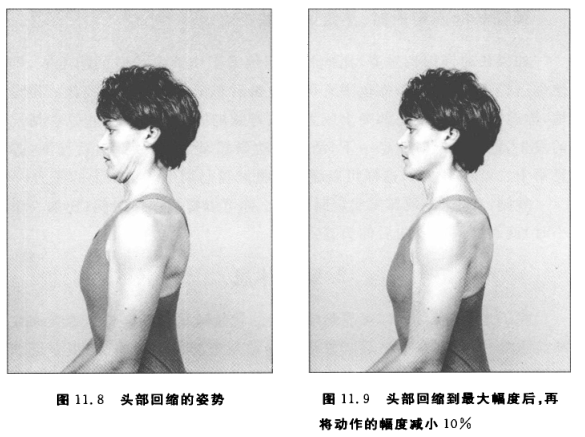
长期保持头部回缩的极端姿势是不可能的，这个姿势颈椎会受到很大压力。你可以将动作幅度减小约 10%，这个就是正确的姿势了。
麦肯基疗法 – 背部
练习 1 – 俯卧
不适用颈部疼痛患者。
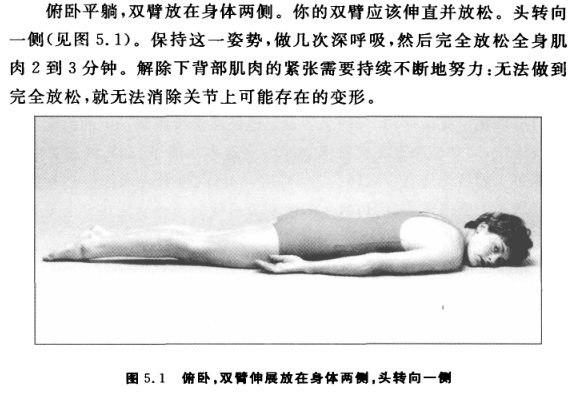
这个练习主要用于治疗急性的背痛（近期发生的、较为剧烈的疼痛，与长期的，若隐若现的疼痛相对应）。这个可以说是麦肯基疗法中的急救措施
练习 2 – 俯卧伸展运动
将手肘放在垂直于肩膀之下的地方，使上半身支撑在前臂之上。首先 深呼吸几次，然后尽量完全放松下背部的肌肉。保持这一姿势 2 到 3 分钟。
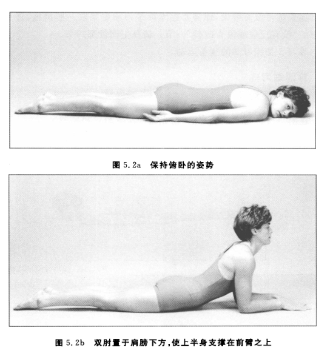
主要用于急性下背部疼痛的治疗，如同练习 1 一样，练习 2也是麦肯基疗法中的急救练习。对于慢性和复发性疼痛患者，也可以有不错的效果。
每组练习中应该做一次练习 2， 如同练习 1 一样， 请每 2 小时做一次
如果你在练习中感觉到突发的疼痛加剧，请增大双臂手肘之间的距离，使上半身倾斜的角度降低到你可以忍受的程度
练习 3 – 卧式伸展运动
需要先做练习1 和练习 2
继续保持俯卧的姿势，面向前方。将双手放在肩膀之下，摆出准备做俯卧撑的姿势。接下来就可以做练习 3 了
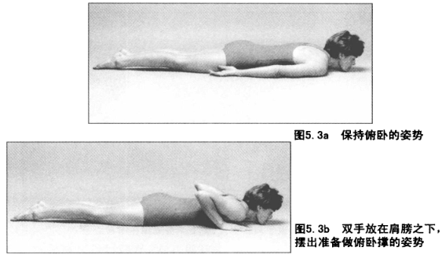
伸直手臂，在疼痛可以忍受的前提下尽量撑起上半身 —- 盆骨以上的部分。在做这个动作的同时，注意完全放松髋部、臀部和双腿，使背部尽量伸展。此时髋关节会自然向后移动。
将这个姿势保持一两秒钟，然后在回到开始时的姿势。每次重复这一动作时，尽量使运动的幅度比上一次更大一些，以便在一组练习结束时，你的背部能伸展到最大的程度，手臂也能尽量地伸直。
每次伸直手臂时，记住要保持这一姿势一两秒的时间, 这是本项练习的关键。如果你感觉到疼痛减弱或者发生集中（或者两者都有），你可以将这一姿势再多保持一段时间。每组做 10 次。同样，每天应该练习 6 到 8 组。
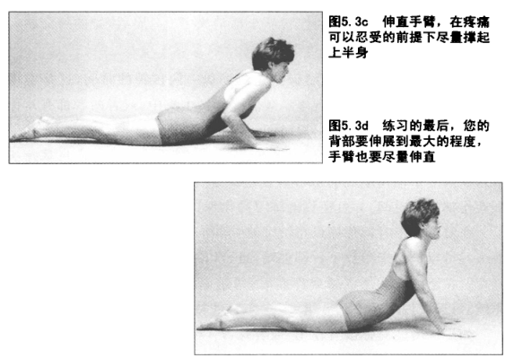
练习 4 – 站立伸展运动
发生急性下背部疼痛时，如果条件不容许你躺下了，那么你可以用练习 4 来代替练习 3。不过，这项练习没有 3 那么有效。依旧是每组 10 次， 每天 6 到 8 组。
一旦你完全康复，不再患有下背部疼痛，练习 4 就是你最佳的预防病痛复发的工具。作为预防措施使用时，你可以再每次弯腰工作一段时间后就做一次练习 4。记住一定要在疼痛产生之前进行此项练习
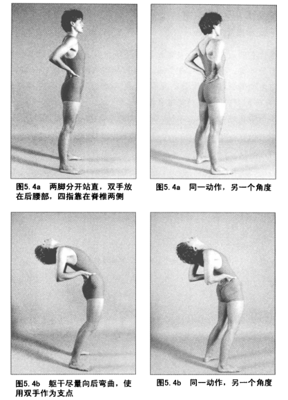
练习 5 – 平躺弯曲运动
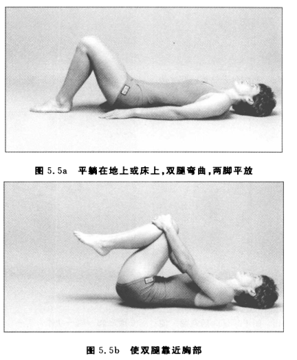
使两膝靠近胸部。抱住双腿，在疼痛可以忍受的前提下轻柔而缓慢地将两膝尽量靠近胸部。保持这个姿势 1 到 2 秒，然后放开双腿回到开始时的姿势。在进行本项练习时记住不要抬起头颈部，还有放下双腿时不要将腿伸直
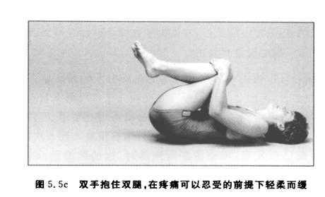
每组仅重复 5 到 6 次， 每天 3 到 4 组。
当膝盖靠近胸部时，你的腰椎前凸就消失了。因此，为了消除可能由此产生的关节变形，进行完弯曲练习后(练习 5、6、7)，一定要再做一组练习 3
练习 6 – 坐式弯曲运动
无论练习 5 是否对缓解你的背部疼痛和僵硬有效，请在连续练习 5 一周后再开始练习 6。
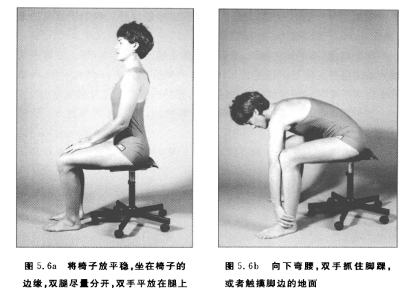
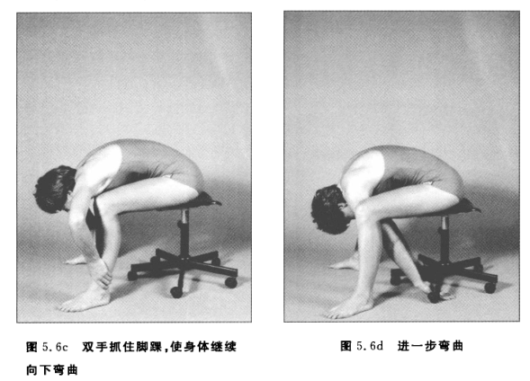
每组只需做 5 到 6 次， 每天 3 到 4 组。在做过练习 6 后必须马上做练习 3
练习 7 – 站立式弯曲运动
无论练习 6 是否对缓解你的背部疼痛和僵硬有效，请在连续练习 6 两周后再开始练习 7。
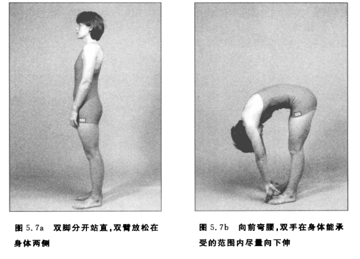
每组只需做 5 到 6 次， 每天 1 到 2 组。在做过练习 7 后必须马上做练习 3。
完全摆脱疼痛 3 个月之后，请千万不要在一天的头 4 个小时内做练习 7 。
没有反应或没有改善
疼痛集中于单侧
将臀部扭向身体比较不痛的那一侧。
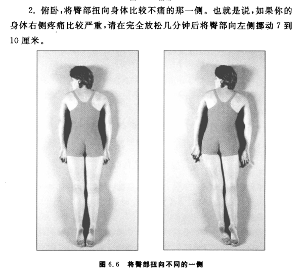
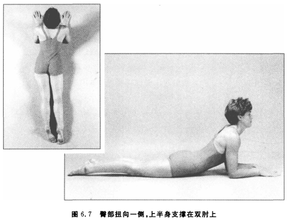盆骨部分没有保持在较低的位置。
降低盆骨的位置有两个方法：
- 让另一个人压住你的下背部
- 或者：
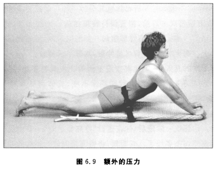
麦肯基疗法 – 颈部
分为 7 个部分.每组练习中最多只会用到 1 到 2 项。
随着练习的继续，如果原来位于脊椎一侧、扩散到肩膀或手臂的疼痛转移到了颈部的中部，即疼痛移动并发生了集中，这是一个好现象。
刚开始练习时，疼痛可能会有所增加。
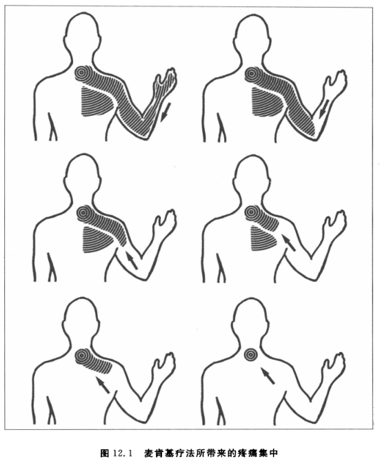
练习 1 – 坐式头部回缩运动
头部回缩指的是将头部向后拉
坐在椅子或凳子上，平视前方，并完全放松。此时你的头部会微微伸出（12.2）。缓慢且平稳地向后移动你的头部，直到不能再向后为止（12.3）。在做这个动作时，不要将下巴翘起。换句话说，请一直平视前方，不要让头部向后倾斜，也不要向上看。当你的头部向后移动到最大幅度后，你就做出了头部回缩的姿势（12.3）。请保持这个姿势几秒钟，然后放松，这时你的头部和颈部就会在此恢复自然突出的姿势。在重复这一动作时，请确保你的动作幅度达到了最大。
你可以将双手放在下巴上，并将头部慢慢地进一步向后推，这样可以使练习更加有效（12.4）
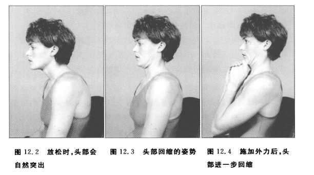
本项练习主要用于对颈部疼痛的治疗，而不是预防。
在治疗颈部疼痛时，本项练习应当每天做 6 到 8 组，每组 10 次。
如果在练习的同时感觉到突发的疼痛，你可以用练习 3 代替。
如果用于预防，你应当在感觉需要的时候就做 5 到 6 次（看个人情况决定）。
练习 2 – 坐式颈部伸展运动
伸展就是向后弯曲。
在做本项练习之前请先做练习1。
抬起下巴，头部后仰，就像要仰望星空一样（12.6）。做这个动作时不要向前移动脖子。尽量后仰头部，并不断地将头部稍稍左右转动（转动约 2 厘米，12.7、12.7a），预测同时，进一步向后仰头。几秒钟后，恢复到开始时的姿势。每次练习时都请确保将动作尽可能做到最大幅度。
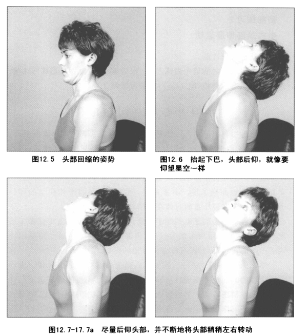
- 这项练习既可以用于治疗，也可以用于预防。
- 练习 2 应当每天做 6 到 8 组，每组 10 次。
- 如果感觉疼痛难忍，可以用练习 3 代替
- 可以将练习 1 和 练习 2 合并一起做
练习 3 – 平躺头部回缩运动
仰卧在床上，头部放在床边，不要靠在床头上。放松头部和肩膀，不要使用枕头。
使用头部的力量（不要用手）尽量将头部向床垫上压，同时收回下颚（12.9）。也就说，你要在直视天花板的同时尽量将头部向后移动。保持这一姿势几秒钟，然后放松。此时你的头部和颈部会自然恢复到开始的姿势。每次练习都请确保你的头部和颈部已经向后移动到了最大幅度。
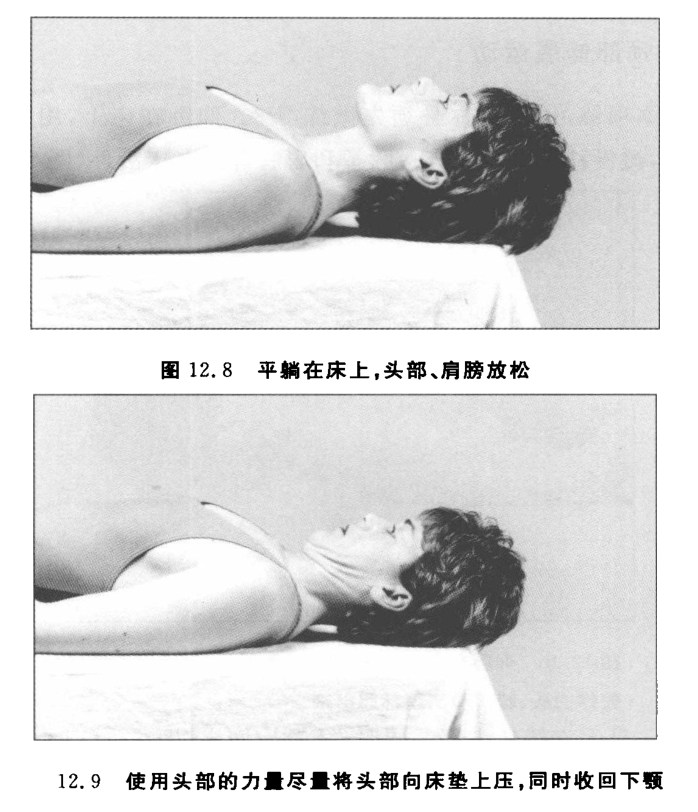
本项练习主要用于急性颈部疼痛的治疗。在做完十次头部回缩的动作后，你必须评估一下这个练习对你颈部疼痛症状的影响。如果疼痛集中或强度减轻，那么你可以放心继续进行本项练习。在这种情况下，你应当每天练习 6-8 组，每组 10 次。
如果疼痛显著加重并蔓延到了离脊椎较远的位置，或者手指有针刺感和麻木感，请立即停止练习并向专家咨询。
练习 4 – 平躺颈部伸展运动
做本项练习之前，你必须先做练习 3。
仰卧在床上，用一只手支撑住头部，慢慢移动，使你的头、脖子和肩膀都露在床沿外。
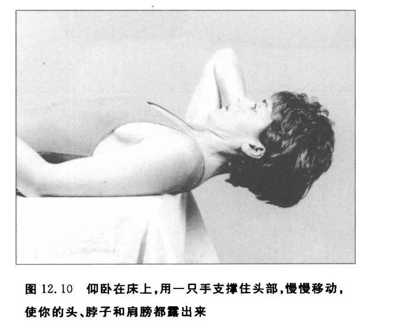
在用一只手支撑住头部的同时，缓慢地仰头（12.11）。然后逐步把手移开（12.12），并尽可能地看地板，将头部的动作幅度做到最大。保持这一姿势的同时不断地将头稍稍左右转动（12.13），并继续努力后仰。颈部伸展的幅度达到最大之后，保持这个姿势放松 2 - 3 秒。
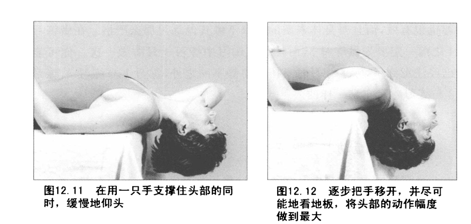
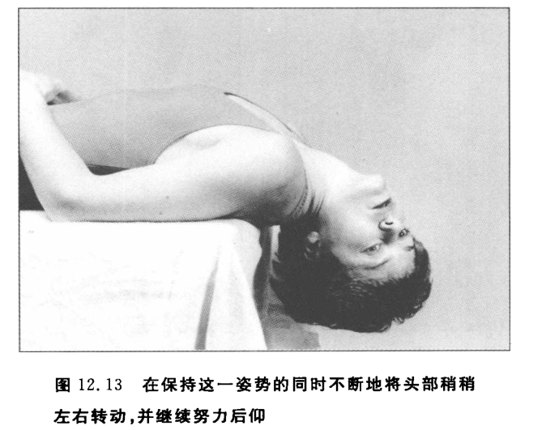
将头托在脑后，慢慢使头部恢复到水平的位置，然后移动身体，使头部再次完全靠到床上，回到休息的状态。在做完这项练习后，记得一定要平躺在床上休息几分钟然后再起来，休息的时候不要 用枕头。
每组练习中练习 4 只需做一次。
除了练习时身体的姿势不同之外，练习 1 与练习 3、练习 2 与练习 4 其实是一样的
练习 5 – 颈部侧弯运动
做在椅子上，重复做几次练习 1，然后保持头部回缩的姿势（12.14），准备开始练习 5。
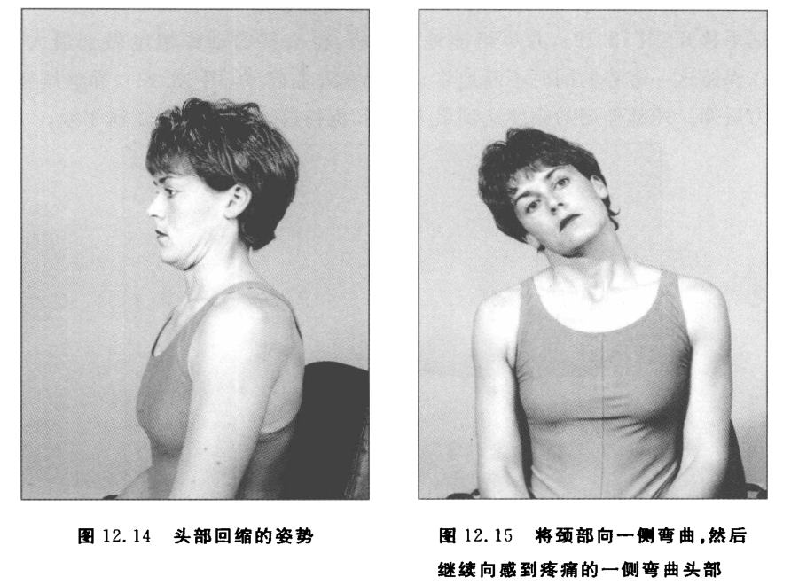
将颈部向一侧弯曲，然后继续向感到疼痛的一侧弯曲头部（12.15）。也就是，平视前方，让一只耳朵靠近肩膀（不要转动头部）。做这个动作时头部一定要保持回缩的姿势。你也可以将手放在头部一侧，轻轻地将头部进一步向疼痛的一侧扳，这样将使练习更加有效（12.16）。保持这个姿势几秒钟，然后恢复到开始的姿势。
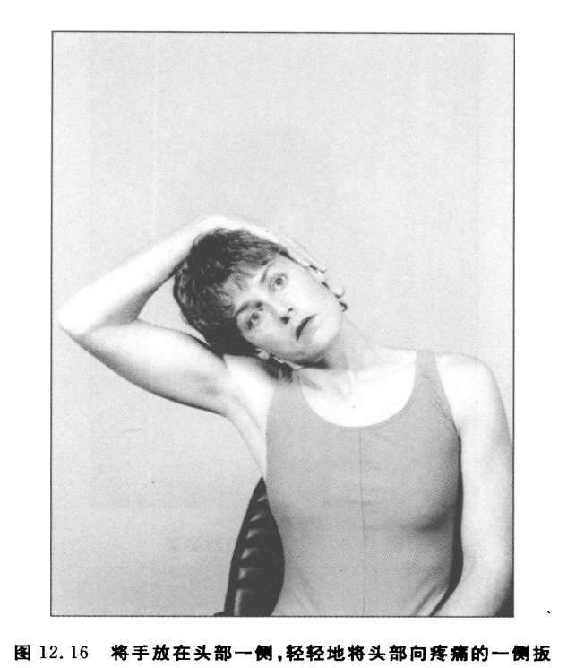
这项练习对单侧疼痛或者偏向一侧的疼痛特别有效。
每天做 6 到 8 组，每组 10 次。直到疼痛发生集中为止。
练习 6 – 颈部转动运动
转动指的是从一侧转到另一侧
坐在椅子上，做几遍练习 1 ，然后保持头部回缩的姿势，准备开始练习 6。
将头部从一侧转到另一侧，尽量将转动的幅度做到最大（12.18），同时保持头部回缩的姿势。如果你在转向一侧时感觉到的疼痛比转向另一侧时大，你可以只做转向疼痛一侧的动作。随着练习的继续，这种疼痛应该会集中到中部，或者逐渐消退。
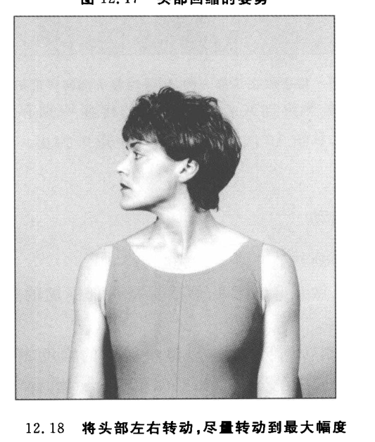
如果疼痛加重，或者疼痛没有发生集中，那么请改为只做转向疼痛较轻一侧的动作。
等到转向一侧的疼痛与转向另一侧相当时，或者转动头部不会感觉到疼痛的时候，你就可以继续从一侧转向另一侧的练习了。
在转动时使用双手慢慢地进一步加大头部的运动的幅度会使练习更加有效（12.19、12.19a）。将转动到最大幅度的姿势保持几秒钟，然后恢复到开始的状态。
本项练习既可以用来治疗颈部疼痛，又可以用来预防颈部疼痛。
用作治疗时，需要每天做 6 到 8 组，每组 10 次。无论疼痛有没有集中，有没有减缓，练习 6 只能在做过练习 1 和 练习 2 之后才能做。
用作预防颈部疼痛时，请每隔 2 到 3 天做一组，每组 5 到 6 次。
练习 7 – 坐式颈部弯曲运动
弯曲指的时向前弯曲颈部
坐在椅子上，目视前方，并完全放松，准备练习 7
低头含胸，让下巴尽量靠经胸部（12.21）。双手交叠于脑后（12.22）。放松双臂，手肘指向地面。此时，双臂的重量将进一步下拉你的头部，使下巴进一步靠近胸部（12.23）。
双手微微用力将头部进一步向下来将本项练习更加有效。保持头部最接近胸部的姿势 2 - 3 秒，然后恢复到开始时的姿势。
本项练习主要用于治疗头痛，并对急性发作恢复之后残留的颈部疼痛和僵硬也有一定的效果。无论哪种情况，本项练习都应当每天做 6 - 8 组，每组 2 - 3 次。
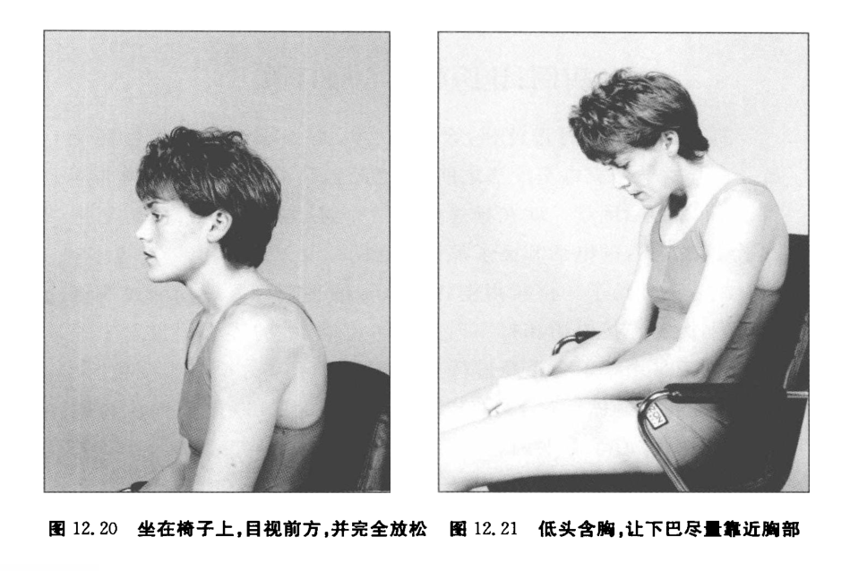
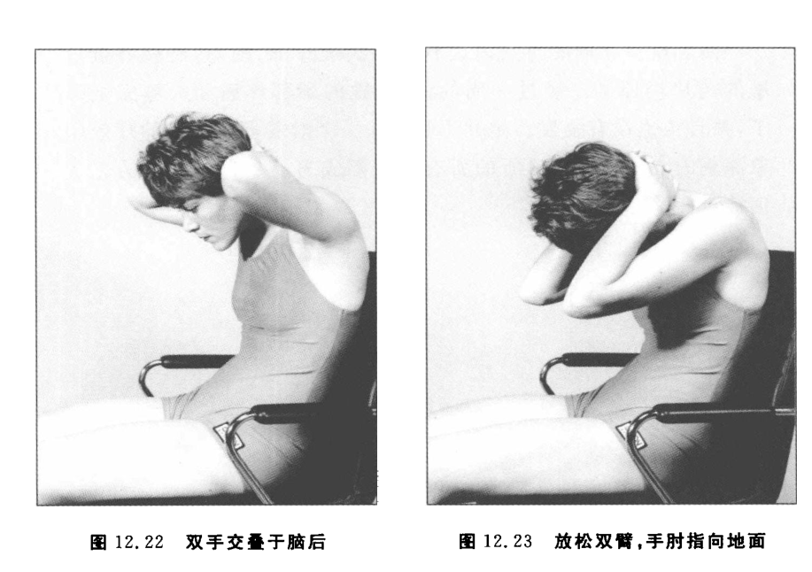
其他
书里面提到的支撑卷，我在某宝关键字 麦肯基 支撑卷，出来的结果要不价格太高，便宜的卖家还不发货。看评论也就一块泡沫棉加个外套，还卖 50 几。
个人推荐买网易严选那个靠枕，个人用起来还行。乳胶的，外套摸起来很舒服。（我趁活动下单的，好东西值这个价）
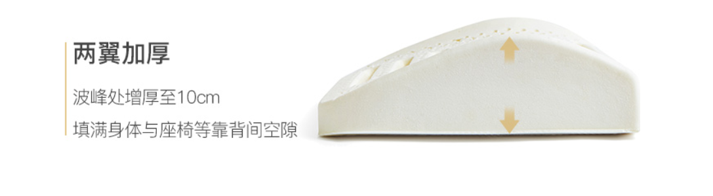
还有一个睡觉用的支撑卷，目前我试了这个。同样也是乳胶内芯。千万不要贪便宜，我在 PDD 下单的那个，乳胶都裂开了，然后退了。
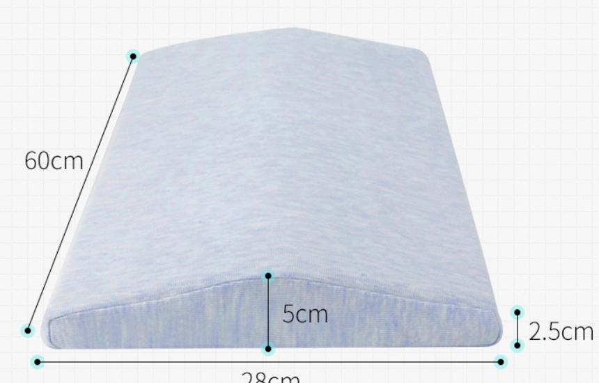
这个都是事后的治理方案，在自己还没有问题的时候，多起来动动。注意自己的坐姿。每天抽出时间去跑步，让身体留点汗。